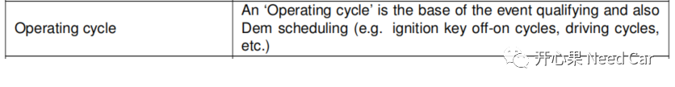
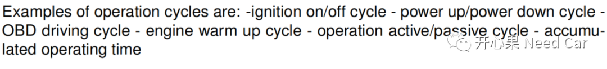
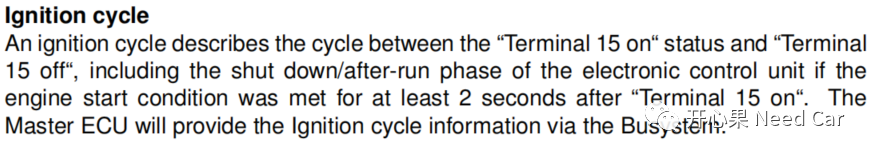
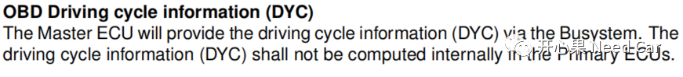
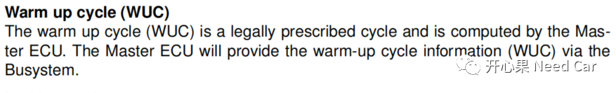
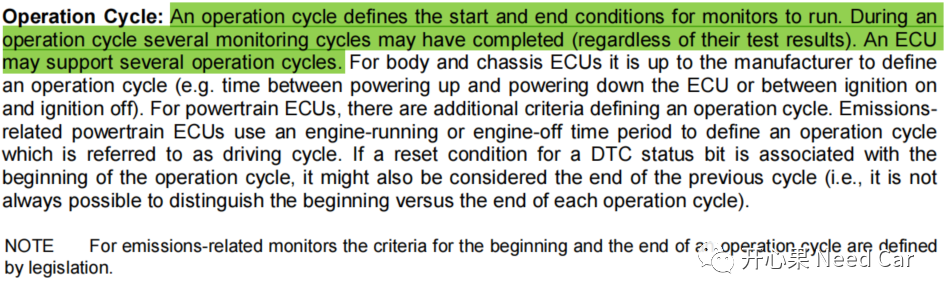
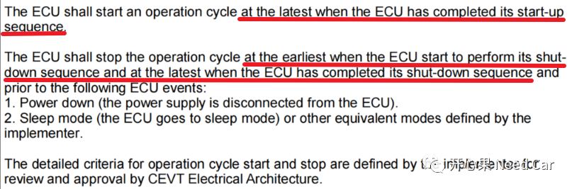
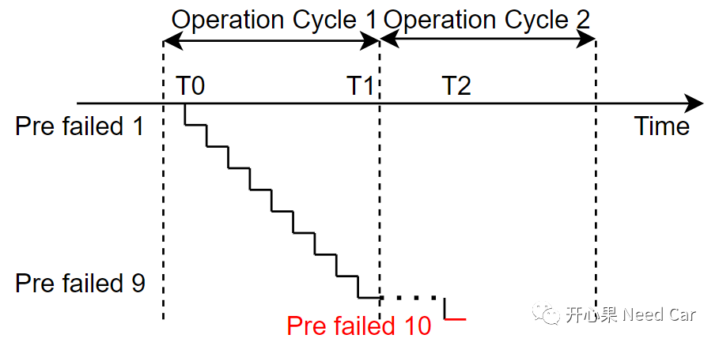
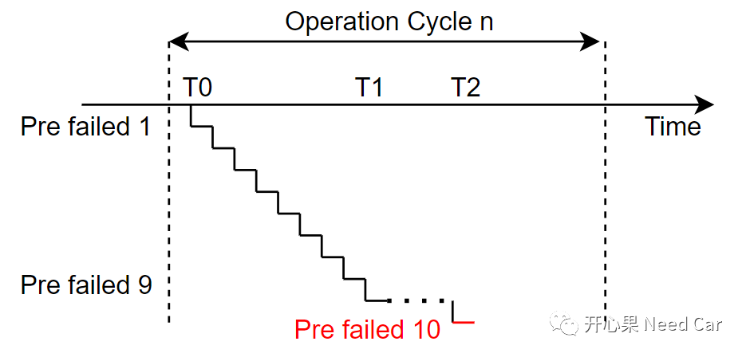
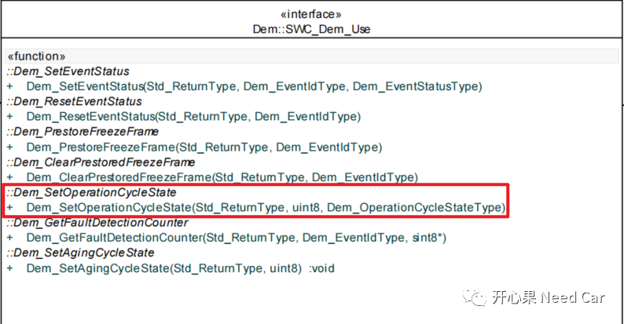

开心果 Need Car · 2022-11-15T07:49:00+08:00 · 微信原文
诊断开发过程中，理解需求时，Operation Cycle的定义和实现不可避免。到底什么是Operation Cycle？reset算是新的Operation Cycle吗？本文，我们侃侃Operation Cycle。
1、什么是Operation Cycle
（一）DEM(Specifification of Diagnostic Event Manager)解释

老实说，我没太理解这个定义，只是看懂了举例：点火循环、驾驶循环等可以作为Operation Cycle。
对于操作循环的类型，Autosar中给了多个例子，如下所示：

即：点火循环、上下电循环、OBD驾驶循环、暖机循环、主动激活/被动使能循环均可以看作是一个Operation Cycle。
点火循环：一般指KL15满足off->on->off状态变化时，为一个点火循环。具体解释如下所示：

上下电循环：可以理解为ECU从完全断电到供电的过程。与点火循环有什么不同呢？点火循环中，ECU未必断电。
OBD驾驶循环：主要由Master ECU提供，Primary ECUs使用。具体释义如下：

暖机循环：类似OBD驾驶循环，具体释义如下所示：

再理解一下14229-1中的解释，如下所示：


2、程序reset，可以看作是一个新的Operation Cycle开始吗？
上述，我们在试图解释清楚什么是Operation Cycle，个人而言，第三种解释应该更清晰。如果是这样，我们需要更进一步地解释清楚：程序Reset，能否看作一个新的Operation Cycle开始？
对于ECU Reset，类型很多，eg：Application Reset、System Reset、异常复位（Trap）、诊断复位（$11服务、$10 02/82）、Cold Start等。
每种ECU复位类型，执行的程序可能会不同。一般和电压相关的复位类型，我们称为冷启动，此种复位类型程序需要执行ECU的上下电时序，可以看作一个完整的操作循环（不考虑异常断电，异常下电可能导致NVM存储失败或者未及时存储）。
如果复位类型是Application Reset（比如：调用MCU_PerformReset()），在一些程序设计中，不会执行完整的Shutdown时序，如此，还能否看作一个新的操作循环？答：个人不认可。如果不能作为一个新的操作循环，程序Reset以后，监控的中间变量是否需要全部清除？个人更倾向于清除监控的所有中间变量，因为，Event如果真的异常，对应的监控变量仍然会达到DTC上报的阈值；如果保留了中间变量（比如：FDC:fault dectect counter）,会使得程序在已有的中间变量基础上继续累加，导致DTC上报过快，甚至误报。
举例：某个Event失败10次，上报对应的DTC，如果程序Reset或者监控条件不满足时，没有清除中间变量，会带来怎样的影响呢？
（一）程序Reset，导致DTC上报过快
如下图：
Operation Cycle 1中，T0开始监控某Event；
T1时刻，此Event失败9次。同时，由于程序软复位（假设此处的reset，中间变量未有清除），开始新的Operation Cycle 2；
T2时刻，由于工况的不稳定，认为Event再次失败（即：失败了10次），导致对应的DTC立马上报。
如此，会使得DTC有误报风险。

如下图：
某Event在T0~T1期间，监控了9次失败;
T1开始，监控条件不满足，失败次数不清除;
T2时刻，Event的监控条件重新满足，可能由于工况的不稳定因素（比如：Tasking的抖动），导致Event检查失败，累加到了10次，上报DTC。
如此，会使得DTC有误报风险。

3、Operation Cycle操作
在DEM中，Operation Cycle的状态包括：DEM_CYCLE_STATE_START和DEM_CYCLE_STATE_END。
这两种Operation Cycle可以通过接口Dem_SetOperationCycleState(Std_ReturnType, uint8, Dem_OperationCycleStateType)设置。按照如上的讨论，可以在程序初始化，DEM模块初始化时（Dem_Init()），将Operation Cycle设置为DEM_CYCLE_STATE_START，在Shutdown时序中将Operation Cycle设置为DEM_CYCLE_STATE_END。
Dem_SetOperationCycleState()接口可以由SWC调用，即：Operation Cycle的起始和结束，可以由上层控制，如下所示：

如果想获取当前Operation Cycle状态，可以通过Std_ReturnType Dem_GetOperationCycleState(uint8OperationCycleId,Dem_OperationCycleStateType* CycleState)接口。
往期精彩回顾